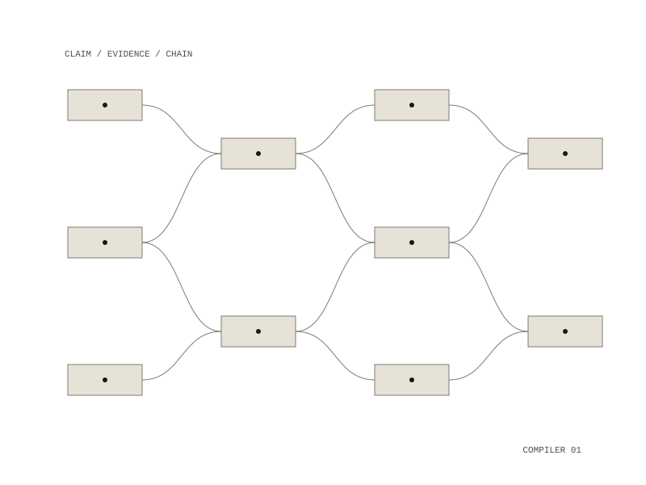

Assay
Point it at a corpus of notes and it extracts, for every claim, its supporting evidence, its contradicting evidence, its assumptions, its citation chain and a confidence — which lets it answer three questions a topic-and-summary catalog cannot.

The three questions
- Which claims rest on a single source?
- Where do these notes contradict each other?
- Which citation chains are circular?
It is a machine for finding out where you are wrong, which is why so few exist.
The one design decision that matters
Its headline output is “no support was found for this claim.” That is indistinguishable, to a reader, from “retrieval was broken.”
So the compiler refuses to report unsupported claims from a degraded run — a stale index, unreadable documents, a model that errored. Contradictions, single-source claims and citation cycles are still reported, because those are findings rather than absences.
Status
Honest state, 18 August 2026. Working with no model needed: corpus loading, both link forms, passage splitting, fingerprinting, TF-IDF retrieval with health, citation-cycle detection, all three reports, and the refusal behaviour. 25 tests; ruff and mypy clean.